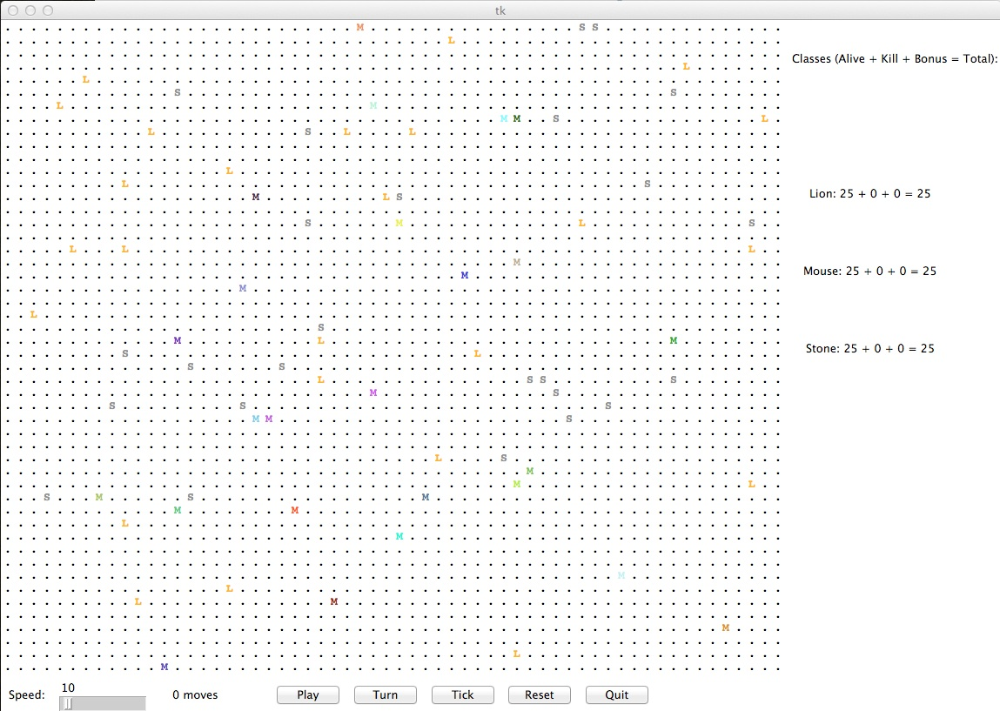

The purpose of this lab is to:
Before you begin, please create a folder called lab09 inside your cs150 folder. This is where you should put all files made for this lab.
Then download the starter files into this folder and unpack it.
# somehow get the file lab09files.tar into ~/cs150/lab09 and go to this directory % tar xvf lab09files.tar % ls
You should now have the files color.py, critter_gui.py, critter_main.py, critter_model.py, and critter.py. These classes implement a graphical simulation of a 2D grid world with many animals moving around in it. Different kinds of animals move in different ways; as you write each class, you are defining those differences.
Before you start, let's take a look at this animal world, an example of which is shown below. You can see this world yourself by running critter_main.
% python3 critter_main.py

At the beginning, you will see an empty grid with no animals. The Play button starts the simulation; initially there is nothing to simulate so the `clock' will just run with nothing happening (you may see some numbers appear on the board--we'll get to those later). The stuff goes down once you have some critters on your board.
On each round of the simulation, every critter is asked which direction it wants to move. Its choices are to move one square to the north, south, east, west, or stay at its current location. Critters move around in a world of finite size, but the world is toroidal as in the Life lab (going off the end to the right brings you back to the left and vice versa; going off the end to the top brings you back to the bottom and vice versa).
The critter world is divided into cells that have integer coordinates. There are 60 cells across and 50 cells up and down. The upper-left cell has coordinates (0,0), increasing x values moves you right and increasing y values move you down (similar to the picture module).
There are some other buttons that may be helpful as well. Turn will run a single turn, in which every critter will move once. Tick will move only the next critter to move. Reset will reset the world to its initial state. There are also a number of helpful command line arguments. Run python3 critter_main.py --help to see a description of them.
This program may be confusing at first because you are not writing the main function (the client code that uses your animal objects), therefore your code will not be in control of the overall program's execution. Instead, you are defining a series of objects that become part of a larger system. For example, you might find that you want to have one of your critters make several moves all at once---you won't be able to do that. The only way a critter can move is to wait for the simulator to ask it for a move. Although this experience can be frustrating, it is a good introduction to the kind of programming we do with objects.
At the beginning of the simulation, each critter is asked to supply an attack and a defense value that it will use for the entire game via its getStats method; these values cannot be changed once they are set, as they are kept track of in the critter_model module and not your own critter. As the simulation runs, animals may collide by moving onto the same location. When two animals collide, they fight using their attack and defense values. If the attacking critter is successful in killing its opponent, the loser is removed from the simulation and the attacker is allowed to move into their spot. Otherwise, both critters remain in the simulation where they were before.
Each critter starts off with 50 health points. Their attack and defense values can be anywhere between 0 and 100, but the sum of both cannot be greater than 100. When two critters fight, the moving critter is registered as the attacking critter and the other is the defender. The defense of the defender is subtracted from the attack of the attacker, and if the result is positive, it is then subtracted from the health of the defending critter. If the defending critter's health reaches or goes below 0, they are are killed. If not, they survive the attack. A 2x bonus is awarded to the defense of a critter whose last move was to stay still. For the first round, every critter that has not yet moved receives this bonus.
| Attacker | ||||
|---|---|---|---|---|
| 100 Attack | 50 Attack | 0 Attack | ||
| Defender | 100 Defense | 0 Damage | 0 Damage | 0 Damage |
| 50 Defense | 50 Damage | 0 Damage | 0 Damage | |
| 0 Defense | 100 Damage | 50 Damage | 0 Damage | |
Each critter you implement must have some specific state and functionality defined. In particular, each of the classes you'll write (one class per animal) will be a subclass of the following provided critter class:
# Constants for movement.
N = "NORTH"
S = "SOUTH"
E = "EAST"
W = "WEST"
C = "CENTER"
DIRECTIONS = ("NORTH", "EAST", "SOUTH", "WEST", "CENTER")
class Critter():
# methods to be implemented
def getColor(self):
pass
def getMove(self, info):
pass
def getStats(self):
pass
def getChar(self):
pass
# this method is called by the client prog when a fight is over
# since the client prog knows who won the fight, when it calls
# this method, it passes in true for the kill parameter if the
# defending critter was killed, and false otherwise.
# oppFight is the opponent's attack and defense stats, as well
# as their remaining health.
# The purpose of this information is to allow you to learn strategies.
def fightOver(self, kill, oppFight):
pass
Because your classes inherit from the superclass, they will be able to refer to the Critter defined constants. Moreover, each class must include a definition for each of the methods in the superclass (getStats, getColor, getMove, getChar, and fightOver) for which it wants different (i.e. not default) behavior. For example, below is a definition for a class called Stone that is part of the simulation. Stone objects are displayed with the letter S, are gray in color, always stay on the current location (returning CENTER for their move), and have 0 attack and 100 defense.
import critter
import color
class Stone(critter.Critter):
def getChar(self):
return "S"
def getColor(self):
return color.GRAY
def getMove(self, info):
return critter.C
def getStats(self):
return 0, 100
# we don't have a fightOver method here, because a
# Stone doesn't do anything with this information
# i.e. it doesn't care to change the default behavior
Add this code to a file called stone.py, then run critter_main. Now you should see some stones in your world. Of course, Stones don't move, so even when you press the Go button, nothing happens, but we'll do more interesting 'animals' in due time.
The Critter class defines five constants for the various directions, and one additional constant for a list containing all five directions. You can refer to these directly in your code (critter.N, critter.C, critter.DIRECTIONS, etc.) because you are inheriting from Critter (and importing critter). Referring to these constants is optional, however, since they can be freely changed by any program capable of importing the critter.py module. In their place, you can refer to the specific values they represent--"CENTER" instead of critter.C, "NORTH" instead of critter.N, etc.
The following are the five critter classes you will implement. Each class must have only one constructor and that constructor must accept exactly the parameter(s) described in the table. For random moves, each possible choice must be equally likely.
8 points, individual
| constructor | def __init__(self, x,y,color) |
| stats | Attack: 60, Defense: 40 |
| color | the color passed to the constructor |
| movement | alternates between EAST and SOUTH in a zigzag pattern (first EAST, then SOUTH, then EAST, then SOUTH,...) |
| character | 'M' |
The Mouse constructor accepts a parameter representing the color in which the Mouse should be drawn. This color should be returned each time the getColor method is called on the Mouse (so, maybe you should store it somewhere). For example, a Mouse constructed with a parameter value of color.RED will return color.RED from its getColor method and will therefore appear red on the screen. Of course, it is the main program that will construct these mice, so you will have no control over what color each Mouse is displayed as.
Note that the Mouse also accepts x and y parameters to its constructor. All critters do this: If you are clever, you can update them in your getMove method to reflect where you currently are in the world. This is unnecessary for Mouse, but may be very helpful for your own critter!
Remember, the getMove method is called by the main program each time the critter needs to move; you can use this information to keep track of whether it is time to move East or to move South.
8 points, individual
| constructor | def __init__(self, x,y,steps) |
| stats | attack: 80, defense: 20 |
| color | color.BLUE |
| movement | first go SOUTH steps times, then go WEST steps times, then go NORTH steps times, then go EAST steps times, then stay still steps times (a clockwise square pattern), then repeat |
| character | 'H' |
The Hippo constructor accepts a parameter representing the distance the Hippo will walk in each direction before changing direction. For example, a Hippo constructed with a parameter value of 8 will walk 8 steps south, 8 steps west, 8 steps north, 8 steps east, stay still for 8 turns, and then repeat. You can assume that the value passed for steps is at least 1.
8 points, partner
| constructor | def __init__(self,x,y) |
| stats | attack: 100, defense: 0 |
| color | alternates between color.ORANGE and color.BLACK (first color.ORANGE, then color.BLACK, then ...) |
| movement | looks one space NORTH, then one space EAST, then one space SOUTH, then one space WEST. If at any point it sees a critter that doesn't display as 'S', 'T', or a number, it attacks. Otherwise, returns a random direction other than CENTER. |
| character | 'L' |
Hints: The isdigit() method of the string class can be called on a string to test if it's a number or not (to call it on string str, use str.isdigit()). Also, random.choice(L) will return a random element of list L. The color needs to change based on how many turns the Lion has had - you can be confident that the getMove method will be called once per turn, but other methods such as getColor may not be.
For the getMove method, you need to determine your opponent's display character. Every time a critter's getMove method is called, it is passed a parameter info of type YourCritterInfo that provides useful information about itself and its current surroundings. In particular, the YourCritterInfo contains the following functions:
observation functions--call these with an a, b pair representing how many squares to the left of and above your current position you want to look, and they will return information about that square: getHealth(a, b): returns the health of the critter occupying the square, or 0 if the square is empty getStats(a, b): returns the stats of the critter occupying the square as an (attack, defense) tuple, or (0, 0) if the square is empty getChar(a, b): returns the character of the critter occupying the square, or '.' if the square is empty getColor(a, b): returns the color of the critter occupying the square, or color.BLACK if the square is empty getType(a, b): returns the class name (NOT the character) of the critter occupying the square, or '.' if the square is empty getSquare(a, b): returns an object of type TheirCritterInfo, which contains all the information of the above functions, but stored in a single variable for (potential) convenience
Thus, in the getMove method, the code info.getColor(0, 1) the color of the critter directly below it. Slightly less usefully, the code info.getType(0, 0) would return the class name of the current critter as it appears to others.
There is a vision limit on the observation functions--you cannot simply observe the entire board with a single critter. Instead, each critter is limited to only observing the squares a distance of 3 or less away (calculated using Euclidean distance, or sqrt(x2 + y2) <= 3).
8 points, partner
| constructor | def __init__(self,x,y) |
| stats | attack: 50, defense: 50 |
| color | the color of the last critter to attack it; if it hasn't been attacked yet, color.GREEN |
| movement | if any critters it can see anywhere within its sights aren't other Chameleoturtles, Stones, or Point Caches, stays still. Otherwise, moves NORTH |
| character | the character of the last critter to attack it; if it hasn't been attacked yet, 'T' |
To check everywhere in the chameleoturtle's sights, you will have to check up to 3 squares away in all of the cardinal directions, and Northwest, Northeast, Southeast and Southwest. I recommend using a for loop, and computing the Euclidean distance to figure out if the chameleoturtle can "see" the square or not.
Notice that the movement of the Chameleoturtle is not dependent on the character of its opponents, but of the class--code this correctly or points will be taken off. Note that to get the character of the last critter to attack, you will need to implement the fightOver method. Fight over will be called by the client whenever a fight ends. It is passed oppInfo as a parameter. oppInfo works just like accessing info for your neighbors - you can call oppInfo.getHealth() to get the health of the critter that attacked you, oppInfo.getChar() to get its character, and so on.
8 points, partner
| constructor | def __init__(self,x,y) |
| stats | you decide |
| color | you decide |
| movement | you decide |
| character | you decide |
You will decide the behaviour of the <YourName> class. (Your constructor must accept paramters self,x and y as shown above.) Remember, the format for naming your class should be your first name followed by your last initial. My critter would be called CynthiaT in the file cynthiat.py.
As the simulation progresses, there are a couple ways to earn points besides simply killing off opponents. There is a bonus awarded every 100 rounds equal to one point for every critter still alive in each class, so longevity might become a priority for you when designing your own. Point Caches are another way to accrue bonus points. They have a 1 in 10 chance of appearing on the board every round, and are worth between 1 and 9 points. To claim one, two critters of the same class must attack it consecutively. If one of your critters attacks a Point Cache and then a Mouse happens to bump into it, you cannot claim it unless both of your critters attack it again with no other interruptions. The only way to rid the board of a Point Cache is to claim it; they cannot be killed or moved otherwise.
Part of your grade will be based upon writing creative and non-trivial behaviour in your critter class. The following are some guidelines and hints about how to write an interesting critter.
Although your stats cannot be changed once they are set in the beginning, not all of your critters have to be identical. Some clever manipulation of class variables and a decent game plan will put you far ahead of other, less-sophisticated critters.
You can make your critter return any character you like from its getChar method and any color you like from the getColor method. In fact, critters are asked what display color and character to use on each round of the simulation, so you can have a critter that displays itself differently over time. Keep in mind that the getChar character is also passed to other animals when they fight your critter; you may wish to strategize to try to fool other animals.
You'll notice some strange interactions occurring between Chameleoturtles and Lions--try to find a way to use this to your advantage!
It's worth it to point out that the color.py module has a getRandomColor function; feel free to use it as you desire! Lastly, the color of a critter tends toward white as its health gets lower--your colors may appear lighter than expected; this is the game showing you that your critters aren't faring too well.
Once you have all finished your lab, we will host a Critter tournament in class consisting of battles in the following format: Two or three students' critter classes will be placed into the simulator world along with the other standard animals (Stone, Mouse, Hippo, Lion, and Chameleoturtle), with 25 of each animal type. The simulator will be started and run until 150 moves have passed. The student whose critter class has the highest score (other critters killed + your critters alive + bonus) wins the battle. The winner of the tournament will gain fame and fortune, as well as a super-secret prize.
If you followed the Honor Code in this assignment, insert a paragraph attesting to the fact within one of your .py files.
I affirm that I have adhered to the Honor Code in this assignment.
You now just need to electronically handin all your files. As a reminder
% cd # changes to your home directory
% cd cs150 # goes to your cs150 folder
% handin # starts the handin program
# class is 150
# assignment is 09
# file/directory is lab09
% lshand # should show that you've handed in something
You can also specify the options to handin from the command line
% cd ~/cs150 # goes to your cs150 folder
% handin -c 150 -a 9 lab09
stone.py mouse.py hippo.py lion.py chameleoturtle.py your_first_name_followed_by_initial_of_last_name.py